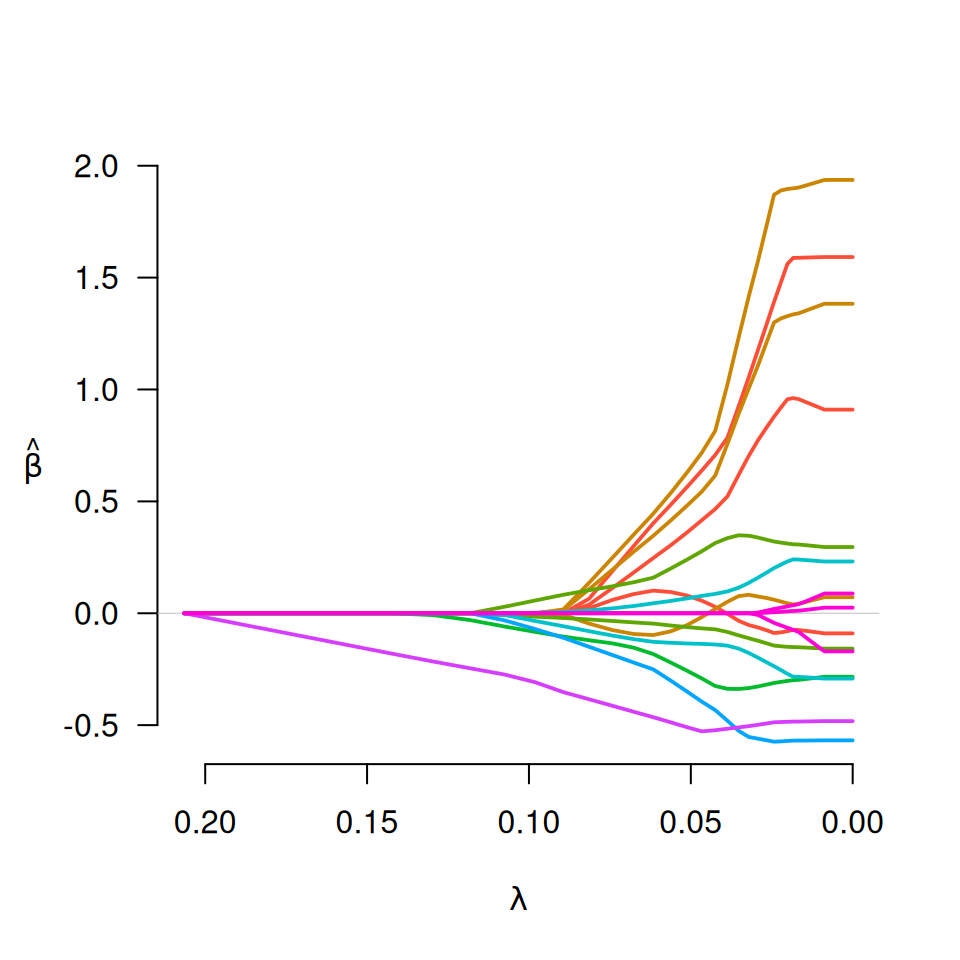
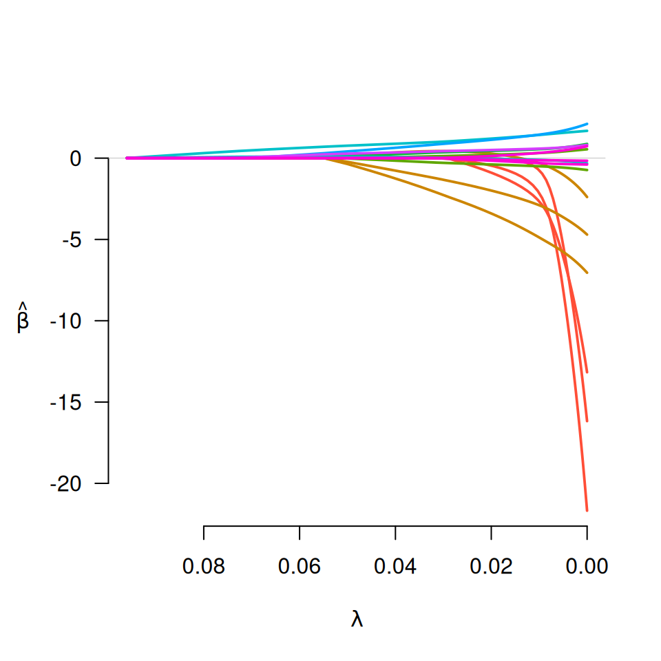
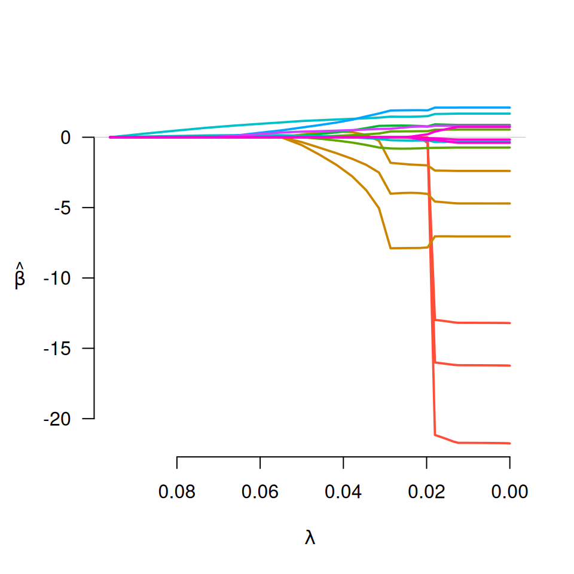
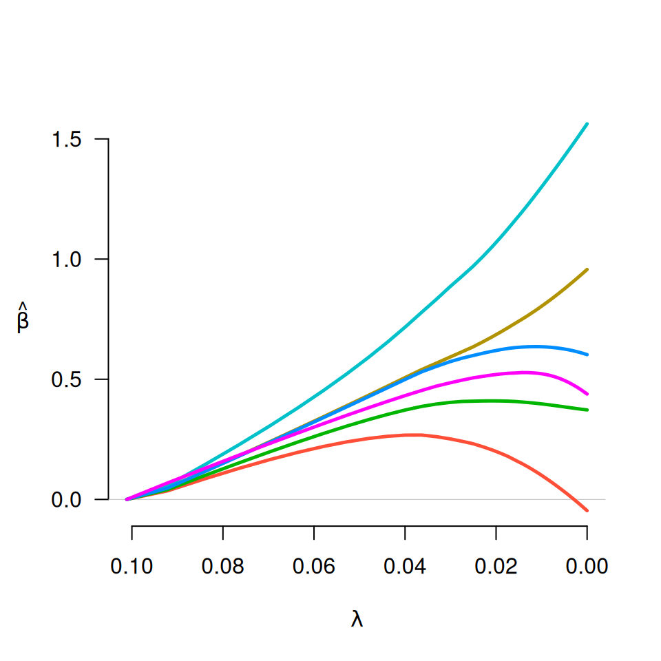
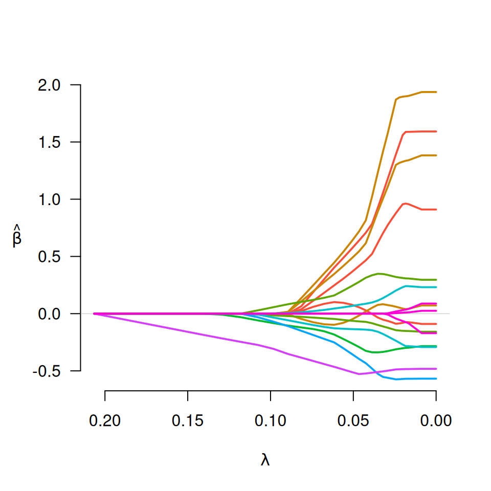
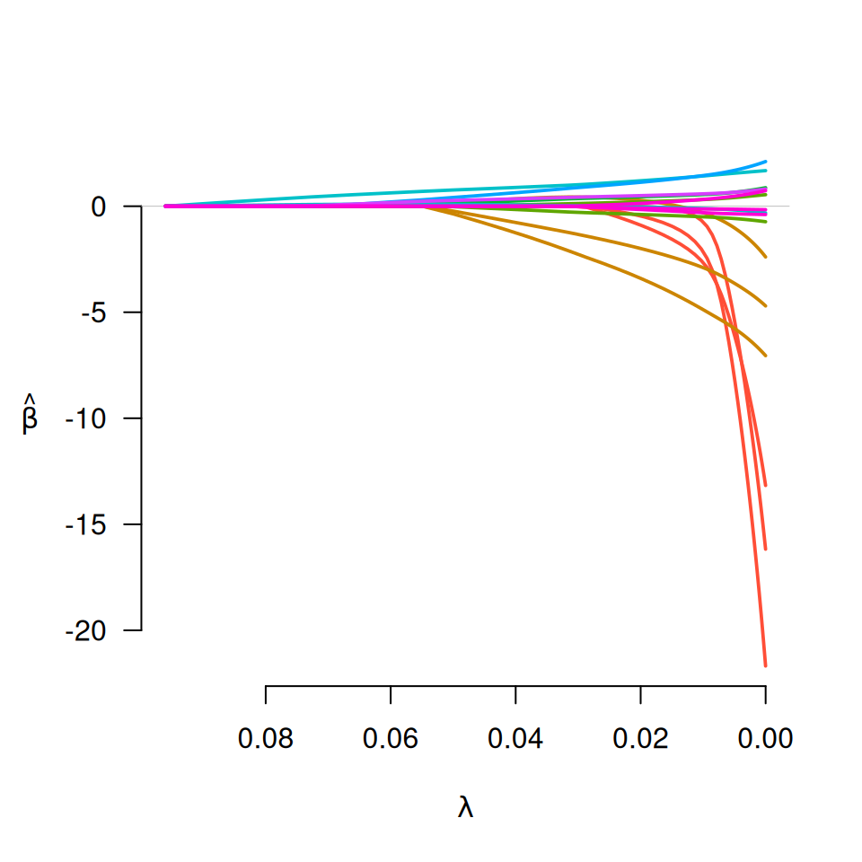
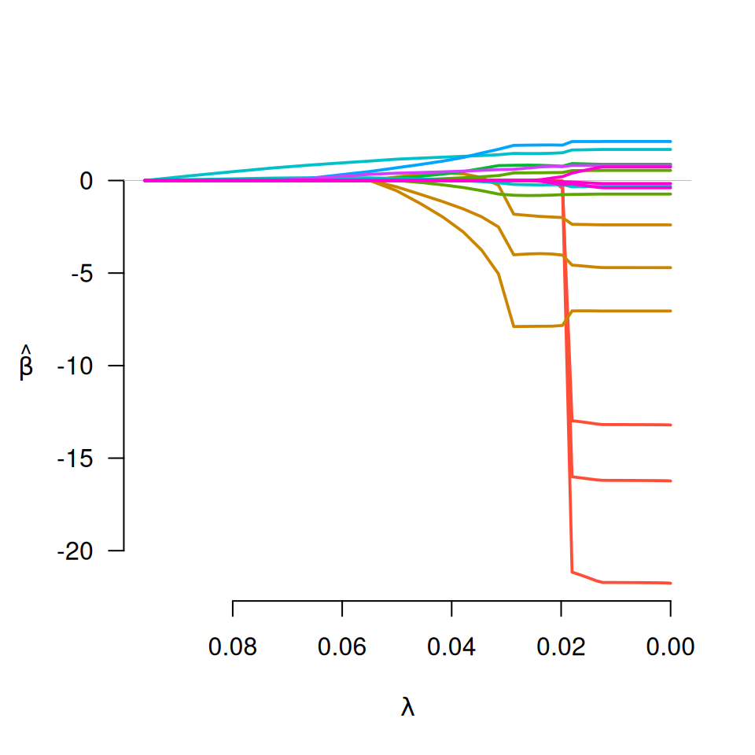
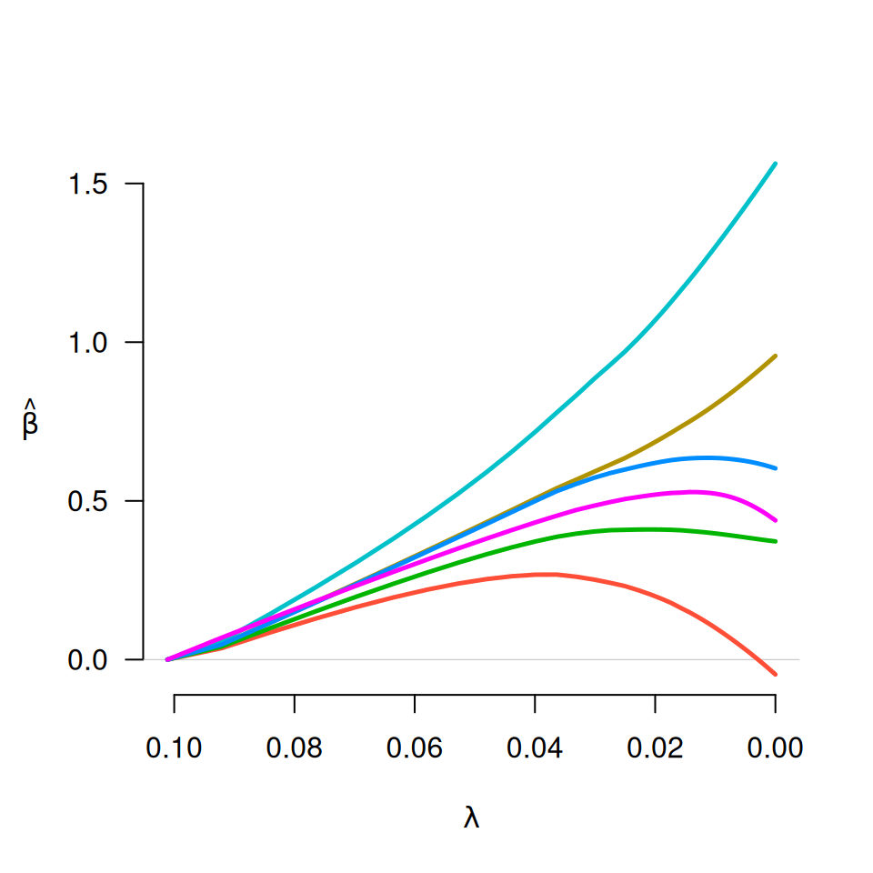

Fit regularization paths for models with grouped penalties over a grid of values for the regularization parameter lambda. Fits linear and logistic regression models.
Usage
grpreg(
X,
y,
group = 1:ncol(X),
penalty = c("grLasso", "grMCP", "grSCAD", "gel", "cMCP"),
family = c("gaussian", "binomial", "poisson"),
nlambda = 100,
lambda,
lambda.min = {
if (nrow(X) > ncol(X))
1e-04
else 0.05
},
log.lambda = TRUE,
alpha = 1,
eps = 1e-04,
max.iter = 10000,
dfmax = p,
gmax = length(unique(group)),
gamma = ifelse(penalty == "grSCAD", 4, 3),
tau = 1/3,
group.multiplier,
warn = TRUE,
returnX = FALSE,
...
)Arguments
- X
The design matrix, without an intercept.
grpregstandardizes the data and includes an intercept by default.- y
The response vector, or a matrix in the case of multitask learning (see details).
- group
A vector describing the grouping of the coefficients. For greatest efficiency and least ambiguity (see details), it is best if
groupis a factor or vector of consecutive integers, although unordered groups and character vectors are also allowed. If there are coefficients to be included in the model without being penalized, assign them to group 0 (or"0").- penalty
The penalty to be applied to the model. For group selection, one of
grLasso,grMCP, orgrSCAD. For bi-level selection, one ofgelorcMCP. See below for details.- family
Either "gaussian" or "binomial", depending on the response.
- nlambda
The number of
lambdavalues. Default is 100.- lambda
A user supplied sequence of
lambdavalues. Typically, this is left unspecified, and the function automatically computes a grid of lambda values that ranges uniformly on the log scale over the relevant range of lambda values.- lambda.min
The smallest value for
lambda, as a fraction oflambda.max. Default is .0001 if the number of observations is larger than the number of covariates and .05 otherwise.- log.lambda
Whether compute the grid values of lambda on log scale (default) or linear scale.
- alpha
grpregallows for both a group penalty and an L2 (ridge) penalty;alphacontrols the proportional weight of the regularization parameters of these two penalties. The group penalties' regularization parameter islambda*alpha, while the regularization parameter of the ridge penalty islambda*(1-alpha). Default is 1: no ridge penalty.- eps
Convergence threshhold. The algorithm iterates until the RMSD for the change in linear predictors for each coefficient is less than
eps. Default is1e-4. See details.- max.iter
Maximum number of iterations (total across entire path). Default is 10000. See details.
- dfmax
Limit on the number of parameters allowed to be nonzero. If this limit is exceeded, the algorithm will exit early from the regularization path.
- gmax
Limit on the number of groups allowed to have nonzero elements. If this limit is exceeded, the algorithm will exit early from the regularization path.
- gamma
Tuning parameter of the group or composite MCP/SCAD penalty (see details). Default is 3 for MCP and 4 for SCAD.
- tau
Tuning parameter for the group exponential lasso; defaults to 1/3.
- group.multiplier
A vector of values representing multiplicative factors by which each group's penalty is to be multiplied. Often, this is a function (such as the square root) of the number of predictors in each group. The default is to use the square root of group size for the group selection methods, and a vector of 1's (i.e., no adjustment for group size) for bi-level selection.
- warn
Should the function give a warning if it fails to converge? Default is TRUE. See details.
- returnX
Return the standardized design matrix (and associated group structure information)? Default is FALSE.
- ...
Arguments passed to other functions (such as gBridge).
Value
An object with S3 class "grpreg" containing:
- beta
The fitted matrix of coefficients. The number of rows is equal to the number of coefficients, and the number of columns is equal to
nlambda.- family
Same as above.
- group
Same as above.
- lambda
The sequence of
lambdavalues in the path.- alpha
Same as above.
- deviance
A vector containing the deviance of the fitted model at each value of
lambda.- n
Number of observations.
- penalty
Same as above.
- df
A vector of length
nlambdacontaining estimates of effective number of model parameters all the points along the regularization path. For details on how this is calculated, see Breheny and Huang (2009).- iter
A vector of length
nlambdacontaining the number of iterations until convergence at each value oflambda.- group.multiplier
A named vector containing the multiplicative constant applied to each group's penalty.
Details
There are two general classes of methods involving grouped penalties: those
that carry out bi-level selection and those that carry out group selection.
Bi-level means carrying out variable selection at the group level as well as
the level of individual covariates (i.e., selecting important groups as well
as important members of those groups). Group selection selects important
groups, and not members within the group – i.e., within a group,
coefficients will either all be zero or all nonzero. The grLasso,
grMCP, and grSCAD penalties carry out group selection, while
the gel and cMCP penalties carry out bi-level selection. For
bi-level selection, see also the gBridge() function. For
historical reasons and backwards compatibility, some of these penalties have
aliases; e.g., gLasso will do the same thing as grLasso, but
users are encouraged to use grLasso.
Please note the distinction between grMCP and cMCP. The
former involves an MCP penalty being applied to an L2-norm of each group.
The latter involves a hierarchical penalty which places an outer MCP penalty
on a sum of inner MCP penalties for each group, as proposed in Breheny &
Huang, 2009. Either penalty may be referred to as the "group MCP",
depending on the publication. To resolve this confusion, Huang et al.
(2012) proposed the name "composite MCP" for the cMCP penalty.
For more information about the penalties and their properties, please
consult the references below, many of which contain discussion, case
studies, and simulation studies comparing the methods. If you use
grpreg for an analysis, please cite the appropriate reference.
In keeping with the notation from the original MCP paper, the tuning
parameter of the MCP penalty is denoted 'gamma'. Note, however, that in
Breheny and Huang (2009), gamma is denoted 'a'.
The objective function for grpreg optimization is defined to be
$$Q(\beta|X, y) = \frac{1}{n} L(\beta|X, y) + $$$$ P_\lambda(\beta)$$ where the loss function L is
the negative log-likelihood (half the deviance) for the specified outcome
distribution (gaussian/binomial/poisson). For more details, refer to the
following:
For the bi-level selection methods, a locally approximated coordinate descent algorithm is employed. For the group selection methods, group descent algorithms are employed.
The algorithms employed by grpreg are stable and generally converge
quite rapidly to values close to the solution. However, especially when p
is large compared with n, grpreg may fail to converge at low values
of lambda, where models are nonidentifiable or nearly singular.
Often, this is not the region of the coefficient path that is most
interesting. The default behavior warning the user when convergence
criteria are not met may be distracting in these cases, and can be modified
with warn (convergence can always be checked later by inspecting the
value of iter).
If models are not converging, increasing max.iter may not be the most
efficient way to correct this problem. Consider increasing n.lambda
or lambda.min in addition to increasing max.iter.
Although grpreg allows groups to be unordered and given arbitary
names, it is recommended that you specify groups as consecutive integers.
The first reason is efficiency: if groups are out of order, X must be
reordered prior to fitting, then this process reversed to return
coefficients according to the original order of X. This is
inefficient if X is very large. The second reason is ambiguity with
respect to other arguments such as group.multiplier. With
consecutive integers, group=3 unambiguously denotes the third element
of group.multiplier.
Seemingly unrelated regressions/multitask learning can be carried out using
grpreg by passing a matrix to y. In this case, X will
be used in separate regressions for each column of y, with the
coefficients grouped across the responses. In other words, each column of
X will form a group with m members, where m is the number of columns
of y. For multiple Gaussian responses, it is recommended to
standardize the columns of y prior to fitting, in order to apply the
penalization equally across columns.
grpreg requires groups to be non-overlapping.
References
Breheny P and Huang J. (2009) Penalized methods for bi-level variable selection. Statistics and its interface, 2: 369-380. doi:10.4310/sii.2009.v2.n3.a10
Huang J, Breheny P, and Ma S. (2012). A selective review of group selection in high dimensional models. Statistical Science, 27: 481-499. doi:10.1214/12-sts392
Breheny P and Huang J. (2015) Group descent algorithms for nonconvex penalized linear and logistic regression models with grouped predictors. Statistics and Computing, 25: 173-187. doi:10.1007/s11222-013-9424-2
Breheny P. (2015) The group exponential lasso for bi-level variable selection. Biometrics, 71: 731-740. doi:10.1111/biom.12300
See also
cv.grpreg(), as well as plot.grpreg() and select.grpreg() methods.
Examples
# Birthweight data
data(Birthwt)
X <- Birthwt$X
group <- Birthwt$group
# Linear regression
y <- Birthwt$bwt
fit <- grpreg(X, y, group, penalty="grLasso")
plot(fit)
 fit <- grpreg(X, y, group, penalty="grMCP")
plot(fit)
fit <- grpreg(X, y, group, penalty="grSCAD")
plot(fit)

fit <- grpreg(X, y, group, penalty="gel")
plot(fit)
fit <- grpreg(X, y, group, penalty="cMCP")
plot(fit)
select(fit, "AIC")
#> $beta
#> (Intercept) age1 age2 age3 lwt1 lwt2
#> 3.03000773 0.00000000 1.14484129 0.57059454 1.30067773 0.00000000
#> lwt3 white black smoke ptl1 ptl2m
#> 0.90025980 0.29687103 -0.05940071 -0.26940924 -0.23983487 0.01075293
#> ht ui ftv1 ftv2 ftv3m
#> -0.45620940 -0.44477459 0.01632410 0.00000000 -0.02590741
#>
#> $lambda
#> [1] 0.03869348
#>
#> $df
#> [1] 9.805114
#>
#> $IC
#> [1] 419.9884 415.9171 413.0551 410.1149 405.8256 401.0234 395.6942 390.8250
#> [9] 385.9994 381.6926 378.2296 375.6049 373.2817 371.5483 370.2815 369.4147
#> [17] 368.8327 368.4968 368.3677 368.4282 368.5912 368.8236 369.1017 369.4053
#> [25] 369.7208 370.0378 370.3488 370.6482 370.9327 371.1999 371.4486 371.6783
#> [33] 371.8892 372.0816 372.2563 372.4144 372.7731 373.3927 374.3380 375.1275
#> [41] 375.7750 376.3135 376.7658 377.1486 377.4743 377.7527 377.9913 378.1963
#> [49] 378.3725 378.5237 378.6542 378.7677 378.8665 378.9522 379.0265 379.0914
#> [57] 379.1481 379.1975 379.2410 379.2792 379.3131 379.3429 379.3690 379.3920
#> [65] 379.4122 379.4298 379.4451 379.4586 379.4705 379.4810 379.4903 379.4984
#> [73] 379.4869 379.4947 379.5017 379.5078 379.5132 379.5180 379.5222 379.5261
#> [81] 379.5295 379.5326 379.5354 379.5379 379.5402 379.5422 379.5440 379.5457
#> [89] 379.5471 379.5484 379.5496 379.5506 379.5515 379.5523 379.5530 379.5537
#> [97] 379.5542 379.5547 379.5551 379.5555
#>
# Logistic regression
y <- Birthwt$low
fit <- grpreg(X, y, group, penalty="grLasso", family="binomial")
plot(fit)

fit <- grpreg(X, y, group, penalty="grMCP", family="binomial")
plot(fit)

fit <- grpreg(X, y, group, penalty="grSCAD", family="binomial")
plot(fit)
fit <- grpreg(X, y, group, penalty="gel", family="binomial")
plot(fit)
fit <- grpreg(X, y, group, penalty="cMCP", family="binomial")
plot(fit)
select(fit, "BIC")
#> $beta
#> (Intercept) age1 age2 age3 lwt1 lwt2
#> -1.194072 0.000000 0.000000 0.000000 -6.940487 0.000000
#> lwt3 white black smoke ptl1 ptl2m
#> -3.133163 0.000000 0.000000 0.000000 1.602972 0.000000
#> ht ui ftv1 ftv2 ftv3m
#> 1.806523 0.000000 0.000000 0.000000 0.000000
#>
#> $lambda
#> [1] 0.06423099
#>
#> $df
#> [1] 4.670807
#>
#> $IC
#> [1] 234.6720 230.0990 230.0000 229.9536 229.9441 229.9598 229.9920 230.0346
#> [9] 229.2504 229.6901 229.9650 234.2584 234.6746 239.7532 239.9728 242.3188
#> [17] 242.7281 249.3212 255.2388 261.5262 261.6906 261.8543 265.4466 266.0958
#> [25] 266.5227 272.5203 272.7270 272.8737 272.9777 273.0514 273.1027 273.1361
#> [33] 273.1565 273.1643 273.1700 273.1707 273.1707 273.1707 273.1707 273.1707
#> [41] 273.1707 273.1707 273.1707 273.1707 273.1707 273.1707 273.1707 273.1707
#> [49] 273.1707 273.1707 273.1707 273.1707 273.1707 273.1707 273.1707 273.1707
#> [57] 273.1707 273.1707 273.1707 273.1707 273.1707 273.1707 273.1707 273.1707
#> [65] 273.1707 273.1707 273.1707 273.1707 273.1707 273.1707 273.1707 273.1707
#> [73] 273.1707 273.1707 273.1707 273.1707 273.1707 273.1707 273.1707 273.1707
#> [81] 273.1707 273.1707 273.1707 273.1707 273.1707 273.1707 273.1707 273.1707
#> [89] 273.1707 273.1707 273.1707 273.1707 273.1707 273.1707 273.1707 273.1707
#> [97] 273.1707 273.1707 273.1707 273.1707
#>
# Multitask learning (simulated example)
set.seed(1)
n <- 50
p <- 10
k <- 5
X <- matrix(runif(n*p), n, p)
y <- matrix(rnorm(n*k, X[,1] + X[,2]), n, k)
fit <- grpreg(X, y)
# Note that group is set up automatically
fit$group
#> [1] 5 6 7 8 9 10
#> Levels: 5 6 7 8 9 10
plot(fit)

fit <- grpreg(X, y, group, penalty="grMCP")
plot(fit)
fit <- grpreg(X, y, group, penalty="grSCAD")
plot(fit)

fit <- grpreg(X, y, group, penalty="gel")
plot(fit)
fit <- grpreg(X, y, group, penalty="cMCP")
plot(fit)
select(fit, "AIC")
#> $beta
#> (Intercept) age1 age2 age3 lwt1 lwt2
#> 3.03000773 0.00000000 1.14484129 0.57059454 1.30067773 0.00000000
#> lwt3 white black smoke ptl1 ptl2m
#> 0.90025980 0.29687103 -0.05940071 -0.26940924 -0.23983487 0.01075293
#> ht ui ftv1 ftv2 ftv3m
#> -0.45620940 -0.44477459 0.01632410 0.00000000 -0.02590741
#>
#> $lambda
#> [1] 0.03869348
#>
#> $df
#> [1] 9.805114
#>
#> $IC
#> [1] 419.9884 415.9171 413.0551 410.1149 405.8256 401.0234 395.6942 390.8250
#> [9] 385.9994 381.6926 378.2296 375.6049 373.2817 371.5483 370.2815 369.4147
#> [17] 368.8327 368.4968 368.3677 368.4282 368.5912 368.8236 369.1017 369.4053
#> [25] 369.7208 370.0378 370.3488 370.6482 370.9327 371.1999 371.4486 371.6783
#> [33] 371.8892 372.0816 372.2563 372.4144 372.7731 373.3927 374.3380 375.1275
#> [41] 375.7750 376.3135 376.7658 377.1486 377.4743 377.7527 377.9913 378.1963
#> [49] 378.3725 378.5237 378.6542 378.7677 378.8665 378.9522 379.0265 379.0914
#> [57] 379.1481 379.1975 379.2410 379.2792 379.3131 379.3429 379.3690 379.3920
#> [65] 379.4122 379.4298 379.4451 379.4586 379.4705 379.4810 379.4903 379.4984
#> [73] 379.4869 379.4947 379.5017 379.5078 379.5132 379.5180 379.5222 379.5261
#> [81] 379.5295 379.5326 379.5354 379.5379 379.5402 379.5422 379.5440 379.5457
#> [89] 379.5471 379.5484 379.5496 379.5506 379.5515 379.5523 379.5530 379.5537
#> [97] 379.5542 379.5547 379.5551 379.5555
#>
# Logistic regression
y <- Birthwt$low
fit <- grpreg(X, y, group, penalty="grLasso", family="binomial")
plot(fit)

fit <- grpreg(X, y, group, penalty="grMCP", family="binomial")
plot(fit)

fit <- grpreg(X, y, group, penalty="grSCAD", family="binomial")
plot(fit)
fit <- grpreg(X, y, group, penalty="gel", family="binomial")
plot(fit)
fit <- grpreg(X, y, group, penalty="cMCP", family="binomial")
plot(fit)
select(fit, "BIC")
#> $beta
#> (Intercept) age1 age2 age3 lwt1 lwt2
#> -1.194072 0.000000 0.000000 0.000000 -6.940487 0.000000
#> lwt3 white black smoke ptl1 ptl2m
#> -3.133163 0.000000 0.000000 0.000000 1.602972 0.000000
#> ht ui ftv1 ftv2 ftv3m
#> 1.806523 0.000000 0.000000 0.000000 0.000000
#>
#> $lambda
#> [1] 0.06423099
#>
#> $df
#> [1] 4.670807
#>
#> $IC
#> [1] 234.6720 230.0990 230.0000 229.9536 229.9441 229.9598 229.9920 230.0346
#> [9] 229.2504 229.6901 229.9650 234.2584 234.6746 239.7532 239.9728 242.3188
#> [17] 242.7281 249.3212 255.2388 261.5262 261.6906 261.8543 265.4466 266.0958
#> [25] 266.5227 272.5203 272.7270 272.8737 272.9777 273.0514 273.1027 273.1361
#> [33] 273.1565 273.1643 273.1700 273.1707 273.1707 273.1707 273.1707 273.1707
#> [41] 273.1707 273.1707 273.1707 273.1707 273.1707 273.1707 273.1707 273.1707
#> [49] 273.1707 273.1707 273.1707 273.1707 273.1707 273.1707 273.1707 273.1707
#> [57] 273.1707 273.1707 273.1707 273.1707 273.1707 273.1707 273.1707 273.1707
#> [65] 273.1707 273.1707 273.1707 273.1707 273.1707 273.1707 273.1707 273.1707
#> [73] 273.1707 273.1707 273.1707 273.1707 273.1707 273.1707 273.1707 273.1707
#> [81] 273.1707 273.1707 273.1707 273.1707 273.1707 273.1707 273.1707 273.1707
#> [89] 273.1707 273.1707 273.1707 273.1707 273.1707 273.1707 273.1707 273.1707
#> [97] 273.1707 273.1707 273.1707 273.1707
#>
# Multitask learning (simulated example)
set.seed(1)
n <- 50
p <- 10
k <- 5
X <- matrix(runif(n*p), n, p)
y <- matrix(rnorm(n*k, X[,1] + X[,2]), n, k)
fit <- grpreg(X, y)
# Note that group is set up automatically
fit$group
#> [1] 5 6 7 8 9 10
#> Levels: 5 6 7 8 9 10
plot(fit)
